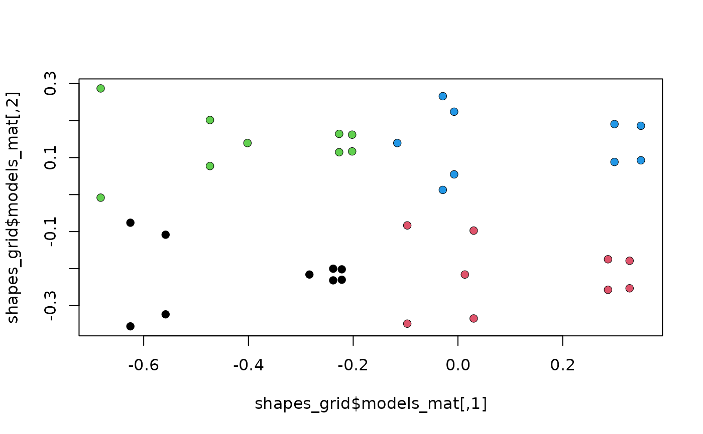

Calculate and arrange background shape models for morphospaces. Used internally.
morphogrid(
ordination,
axes,
datype,
rescale = TRUE,
template = NULL,
x = NULL,
y = NULL,
p = NULL,
k = NULL,
nh = 5,
nv = 4,
mag = 1,
asp = NA,
xlim = NULL,
ylim = NULL,
rot.models = 0,
size.models = 1,
asp.models = 1
)An ordination (i.e., a "prcomp", "bg_prcomp",
"phy_prcomp" or "pls_shape" object).
Numeric of length 1 or 2, indicating the morphometric axes to be
plotted. If values for either x or y are provided, only the
first value of this argument is considered.
Character; the type of shape data (either "fcoef" or
"landm").
Logical; whether to re-scale background shape models so shape variation is shown more clearly.
A 2-column matrix containing landmarks/semilandmarks followed
by coordinates defining a curve or set of curves describing additional
aspects of morphology, which will be warped using TPS interpolation to
produce the set of background shell models (see
build_template2d).
Optional vector with a non-morphometric variable to be plotted in the x axis.
Optional vector with a non-morphometric variable to be plotted in the y axis.
Numeric, indicating the number of landmarks/semilandmarks used (for landmark data only).
Numeric, indicating the number of cartesian dimensions of landmarks/semilandmarks (for landmark data only).
Numeric; the number of shape models along the x axis.
Numeric; the number of shape models along the y axis.
Numeric; magnifying factor for shape models.
Standard arguments passed to the generic plot function
Numeric; angle (in degrees) to rotate shape models.
Numeric; size factor for shape models.
Numeric; the y/x aspect ratio of shape models.
A list of length 3 containing:
$models_mat: a 2-column matrix with the (x,y) coordinates of
all the shape models in the background.
$models_arr: same as models_mat but in 3-margins array
format.
$grid: coordinates marking the centroid of each shape model.
Intended for internal use.
MacLeod, N. (2009). Form & shape models. Palaeontological Association Newsletter, 72(620), 14-27.
#load data and packages
library(geomorph)
data("tails")
#perform pca on tails shapes
pca <- prcomp(two.d.array(tails$shapes))
#generate grid of shape models sampling the range of variation
#at 4 locations (the 4 corners of the scatterplot)
shapes_grid <- morphogrid(ordination = pca, axes = c(1,2), datype = "landm",
k = ncol(tails$shapes), p = nrow(tails$shapes),
nh = 2, nv = 2)
#plot grid from $models_mat and project each shape in models_arr
plot(shapes_grid$models_mat)
points(shapes_grid$models_arr[,,1], pch=16, col = 1)
points(shapes_grid$models_arr[,,2], pch=16, col = 2)
points(shapes_grid$models_arr[,,3], pch=16, col = 3)
points(shapes_grid$models_arr[,,4], pch=16, col = 4)
